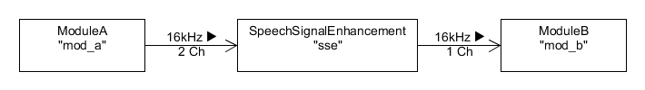

CERENCE SDK - SPEECH SIGNAL ENHANCEMENT USER’S GUIDE
Cerence, Inc. provides this document without representation or warranty of any kind. The information in this document is subject to change without notice and does not represent a commitment by Cerence, Inc. The software and/or databases described in this document are furnished under a license agreement and may be used or copied only in accordance with the terms of such license agreement. Without limiting the rights under copyright reserved herein, and except as permitted by such license agreement, no part of this document may be reproduced or transmitted in any form or by any means, including, without limitation, electronic, mechanical, photocopying, recording, or otherwise, or transferred to information storage and retrieval systems, without the prior written permission of Cerence, Inc.
Cerence and the Cerence logo are trademarks or registered trademarks of Cerence, Inc. or its affiliates in the United States and/or other countries. All other trademarks referenced herein are the property of their respective owners.
Scope Of Document
The main scope of this SDK documentation is to serve as user guide for engineers who use the Cerence SDK to develop and deliver project-specific applications.
Overview
The Speech Signal Enhancement audio module provides the possibility to enhance an audio signal in different ways (e.g. beam forming, echo cancellation, noise reduction, ..) for the main use case of a subsequent performed recognition via the Asr audio module.
Therefore the Speech Signal Enhancement audio module encapsulates the SSE core engine. By default the Speech Signal Enhancement audio module is using the latest version of the SSE core engine but it is also possible to use an older version by JSON module configuration.
The SSE core engine requires a separate configuration file.
This is a so called SCD file, which is not part of the SDK delivery, since this configuration highly depends on the specific acoustic target environment and therefore needs to be tuned specifically.
Note
Do not reuse an SSE core engine configuration file in another target environment. This is not recommended at all, since those files are tuned for the dedicated use case and environment to get an optimal result. Please contact the acoustic expert team via your account manager to order a tuning to the dedicated environment you are developing for.
Note
If no SCD file is defined / configured, the Speech Signal Enhancement audio module will use a build in single channel configuration, which does noise reduction for 16000Hz only. It is recommended to use dedicated SCD files. This build in configuration might be removed in the future.
Document Conventions
API call examples in this document are shown in C syntax.
Developing Applications
API Reference
The API reference documentation of the SDK Speech Signal Enhancement component is included in the Cerence SDK package
at doc/api_reference/audio/audio_module_sse/. There is a separate folder for each supported programming language
in which the reference documentation can be accessed via the mainpage index.html.
The C API documentation is available at doc/api_reference/audio/audio_module_sse/c/index.html.
Configuration API Reference
The configuration has to be done in the JSON format as specified in the configuration API reference:
- Overview
- ISpeechSignalEnhancementConfig - The configuration of the speech signal enhancement module.
- ITopLevelAudioConfig - The top-level audio configuration structure.
- ITopLevelConfig - Interface for top-level configuration classes.
- IUserJsonConfig - Defines a verbatim block of json that is used by VoCon High as is.
- IAudioScenarioConfig - The audio scenario configuration.
- IAudioPluginConfig - The audio plug-in configuration.
- IAudioModuleConfig - The audio module configuration.
- IChunkPoolConfig - ChunkPool configuration.
- IAudioFormatConfig - The audio format configuration.
Creating And Configuring
The creation and configuration of an audio module is described in general in the Creating and Configuring Audio Modules chapter of the main Audio User’s Guide.
The configuration of the audio scenario and the Speech Signal Enhancement audio module looks like this:
...
{
"name": "exampleScenario",
"audiopaths": [ ["mod_a", "sse"], ["sse", "mod_b"]]
}
...
{
"type": "SpeechSignalEnhancement",
"name": "sse",
"sse_config_file": "sse/customer_specific_sse_config_file.scd"
}
...
Given the example from above activating the audioscenario "exampleScenario" will create the Speech Signal Enhancement audio module named "sse".
The Speech Signal Enhancement audio module is linked into the audio stream following the definitions in the audio scenarios audio paths section.
Finally there will be a system setup like shown in the following figure.
Signal Statistics Values
When the configuration key signal_statistics_interval is set the Speech Signal Enhancement audio module is able to emit a
statistic for the incoming audio channels via the AudioManagerListener.
That statistic is emitted via the method onSseSignalStatistic and contains the following set of values for each audio channel.
| Value | SSE Core Documentation | Explanation |
|---|---|---|
| 1 | NbFrames: Number of frames over which the statistics were gathered | Shows the number of sse core blocks this signal statistic covers. To judge the amount of samples this stands for, value 11 was added |
| 2 | SampleClipCnt: Number of clipped samples | Shows how many samples in the interval this statistic covers were clipped / out of range |
| 3 | SampleMax: Greatest sample value encountered | Shows the maximum sample value in the interval this statistic covers |
| 4 | SampleMin: Smallest sample value encountered | Shows the minimum sample value in the interval this statistic covers |
| 5 | RMSMax: Greatest root mean square (RMS) of all samples for a frame | Shows the maximum RMS value calculated for one sse core block in the interval this statistic covers |
| 6 | RMSMin: Smallest root mean square (RMS) of all samples for a frame | Shows the minimum RMS value calculated for one sse core block in the interval this statistic covers |
| 7 | RMSAvg: Average root mean square (RMS) of all samples for a frame | Shows the average of all RMS values calculated for the sse core blocks in the interval this statistic covers |
| 8, 9, 10 | Reserved for future use | — (values have currently no meaning) |
| 11 | — (value is not returned by the SSE core engine) | (derived from value 1) Shows the number of samples this statistic covers |
| 12 | — (value is not returned by the SSE core engine) | (derived from value 5) Shows the maximum dB value calculated for one sse core block in the interval this statistic covers |
| 13 | — (value is not returned by the SSE core engine) | (derived from value 6) Shows the minimum dB value calculated for one sse core block in the interval this statistic covers |
| 14 | — (value is not returned by the SSE core engine) | (derived from value 7) Shows the average of all dB values calculated for the sse core blocks in the interval this statistic covers |
Note
The statistics data that are returned represent the statistics for the defined time interval only. The statistics data is not accumulated over time.
Version History
| REVISION | DATE | DESCRIPTION |
|---|---|---|
| 1.0 | 10.06.2019 | initial version |